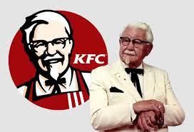

Historia
La historia de KFC, Kentucky Fried Chicken, es una fascinante saga de emprendimiento y éxito en la industria de la comida rápida. Aquí te dejo un resumen de su evolución:
Inicios y Fundación
- 1930: Harland Sanders abrió una pequeña estación de servicio en North Corbin, Kentucky, donde comenzó a servir comidas a los viajeros. Inicialmente, no era un restaurante, sino un lugar donde los clientes podían comer en una mesa improvisada en su propia estación de servicio.
- 1936: La calidad de su comida le valió a Sanders el título honorario de "Coronel de Kentucky" por parte del gobernador de Kentucky.
- 1937: Sanders amplió su negocio y abrió el Sanders Court & Café, que incluía un motel y un restaurante con capacidad para 142 personas.
Desarrollo de la Receta Secreta
- 1940: Sanders desarrolló su famosa receta de 11 hierbas y especias. Esta receta se convirtió en el corazón del éxito de KFC y sigue siendo un secreto bien guardado hasta el día de hoy.
- Década de 1940: Con la construcción de la carretera interestatal, el negocio de Sanders se vio afectado. En 1952, vendió su propiedad y comenzó a franquiciar su receta a otros restaurantes.
Expansión y Crecimiento
- 1952: Pete Harman, un amigo de Sanders, abrió el primer restaurante KFC en Salt Lake City, Utah. Este fue el primer establecimiento en usar el nombre "Kentucky Fried Chicken".
- 1956-1964: Sanders viajó por Estados Unidos, vendiendo la franquicia de su receta a varios restaurantes. Para 1964, había más de 600 franquicias de KFC en Estados Unidos y Canadá.
- 1964: Sanders vendió la compañía a un grupo de inversores liderado por John Y. Brown Jr. y Jack C. Massey por $2 millones. Sanders continuó siendo el portavoz de la marca.
